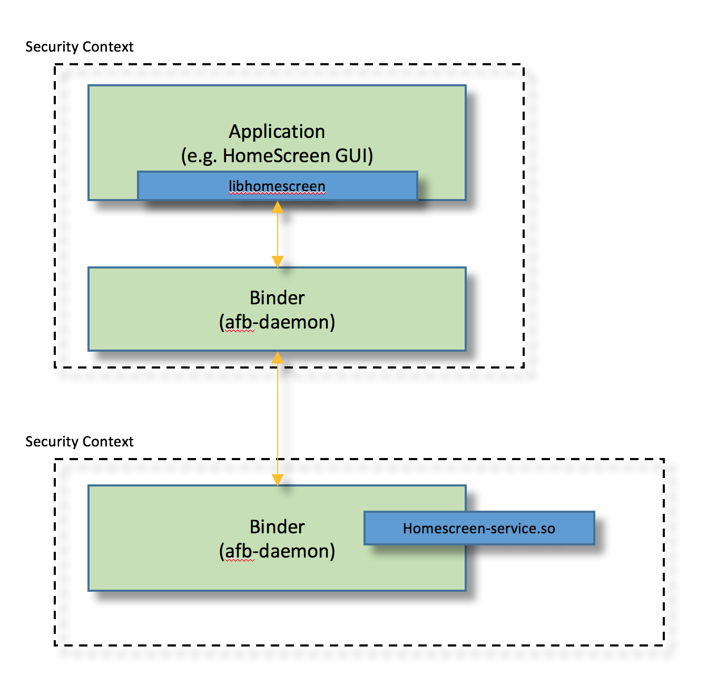
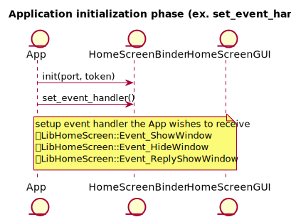
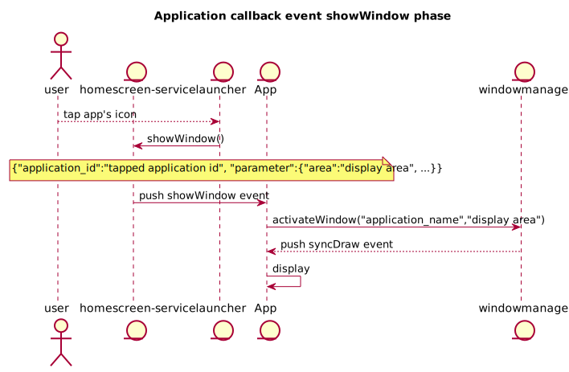
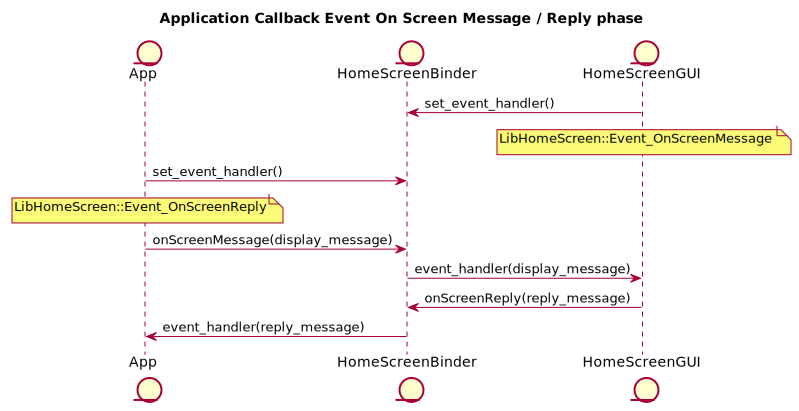
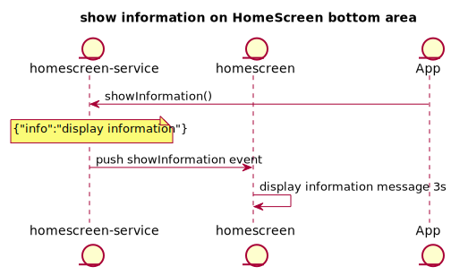

HomeScreen GUI Application / HomeScreen Service Guide
Revision: 0.1
TOYOTA MOTOR CORPORATION
Advanced Driver Information Technology
13th/May/2019
Table of content
- Target reader of this document
- Overview
- Getting Start
- Supported usecase
- Software Architecture
- API reference
- Sequence
- Sample code
- Limitation
- Next Plan
- Appendix
Target reader of this document
Application developer whose software uses HomeScreen.
Overview
HomeScreen is built with a GUI application created with Qt(referred as HomeScreenGUI), and a service running on afb-daemon (referred as HomeScreenBinder). HomeScreen can start/switch applications run in AGL, also displays information such as onscreen messages.
You can find these projects in AGL gerrit.
- homescreen(HomeScreenGUI)
- launcher(LauncherGUI)
- agl-service-homescreen(HomeScreenBinder's binding library)
- libhomescreen(library for application to communication with HomeScreenBinder
- libqthomescreen(library for qt application to communication with HomeScreenBinder based on libhomescreen)
Also HomeScreenGUI is using libwindowmanager.
Getting Start
Supported environment
| Item | Description |
|---|---|
| AGL version | Grumpy Guppy |
| Hardware | Renesas R-Car Starter Kit Pro(M3) |
Build
Download recipe
$ mkdir WORK
$ cd WORK
$ repo init -u https://gerrit.automotivelinux.org/gerrit/AGL/AGL-repo
$ repo sync
Then you can find the following recipes.
-
meta-agl-demo/recipes-demo-hmi/homescreen -
meta-agl-devel/meta-hmi-framework/recipes-demo-hmi/launcher -
meta-agl-demo/recipes-demo-hmi/agl-service-homescreen -
meta-agl-demo/recipes-demo-hmi/libhomescreen -
meta-agl-devel/meta-hmi-framework/recipes-demo-hmi/qlibhomescreen
Bitbake
$ source meta-agl/scripts/aglsetup.sh -m m3ulcb agl-demo agl-devel agl-appfw-smack agl-hmi-framework
$ bitbake agl-demo-platform
Configuring
To use HomeScreen API, an application shall paste the following configuration definition into "config.xml" of application.
<feature name="urn:AGL:widget:required-api">
<param name="homescreen" value="ws" />
<param name="windowmanager" value="ws" />
</feature>
How to call HomeScreen APIs from your Application?
HomeScreen provides a library which is called "libhomescreen". This library treats "json format" as API calling. For example, if an application wants to call "showWIndow()" API, then you should implement as below.
At first the application should create the instance of libhomescreen.
LibHomeScreen* libhs;
libhs = new LibHomeScreen();
libhs->init(port, token);
The port and token is provided by Application Framework
Execute the "showWindow()" function.
libhs->showWindow("application_id", "display_area");
Regarding the detail of showWindow() API, please refer this section. The first parameter is the appid of application which want to display,liked "dashboard". And the second parameter corresponds to display_area which defined by windowmanager,usually "normal", so in this case "showWindow" the two parameters are proper string.
See also our Sample code.
Supported usecase
- HomeScreenGUI sending showWindow event to applications
- Applications using libhomescreen to subscribe the showWindow event, HomeScreenGUI will send showWindow event to applications.
- Display OnScreen messages(deprecated)
- Applications sending OnScreen messages to homescreen-service, and OnScreenAPP will get these message and display.
- Get OnSreen Reply event(deprecated)
- When OnScreen messages is displaying, OnScreenAPP will send a reply event to applications.
- Display OnScreen by showWindow
- When application who want to show OnScreen,it can call "showWindow",then OnScreenApp will display request OnScreen.
- Hide OnScreen by hideWindow
- When application who want to hide OnScreen which is displaying,it can call "hideWindow",then OnScreenApp will hide OnScreen.
- Send OnScreen Reply by replyShowWindow
- When user touch the button of OnScreen, OnScreenApp can call "relplyShowWindow" to send reply information back to application.
- Show Notification on HomeScreenGUI
- When application who want to display a notification,it can call "showNotification",then HomeScreenGUI will display the notification contents on the screen top area.
- Show Information on HomeScreenGUI
- When application who want to display a information,it can call "showInformation",then HomeScreenGUI will display the information contents on the screen bottom area.
Software Architecture
The architecture of HomeScreen is shown below. HomeScreen is the service designed to be used by multiple applications. Therefore HomeScreen framework consists on two binder layers. Please refer the following figure. The upper binder is for application side security context for applications. The lower binder is for servide side security context. Usually application side binder has some business logic for each application, so the number of binders depend on the number of applications which use HomeScreen. On the other hand, regarding lower binder there is only one module in the system. This binder receives all messages from multiple applications (in detail, it comes from upper layer binder).
The communication protocols between libhomescreen and upper binder, upper binder and lower binder(homescreen-binding) are WebSocket.

API reference
"libhomescreen" and "agl-service-homescreen" provides several kinds of APIs.
HomeScreen Specific API
- LibHomeScreen::init (const int port, const std::string &token)
port [in] : This argument should be specified to the port number to be used for WebSocket
token [in] : This argument should be specified to the token to be used for WebSocket
Create connection to homescreen-service by port and token which provided by
application framework. This API must be called before calling other api.
- LibHomeScreen::tapShortcut(const char *application_id)
application_id [in] : Tapped application id (label)
This api is deprecated, recommend using showWindow.
- LibHomeScreen::onScreenMessage(const char *display_message)
display_message [in] : message for display
This api is deprecated, recommend using showWindow/hideWindow to call onscreenapp.
- LibHomeScreen::onScreenReply(const char *reply_message)
reply_message [in] : message for reply
This api is deprecated, recommend using replyShowWindow.
- LibHomeScreen::registerCallback(void(event_cb)(const std::string &event, struct json_object event_contents), void(reply_cb)(struct json_object reply_contents), void(*hangup_cb)(void)=nullptr)
event_cb [in] : This argument should be specified to the callback for subscribed event
reply_cb [in] : This argument should be specified to the reply callback for call function
hangup_cb [in] : This argument should be specified to the hangup callback for call function
This api is deprecated, recommend using set_event_handler.
- LibHomeScreen::set_event_handler(enum EventType et, handler_func f)
et [in] : event name
f [in] : event handler
Setting event handler for Homescreen-Service Event.
- LibHomeScreen::call(const string& verb, struct json_object* arg)
- LibHomeScreen::call(const char verb, struct json_object arg)
verb [in] : This argument should be specified to the API name (e.g. "tap_shortcut")
arg [in] : This argument should be specified to the argument of API.
And this argument expects JSON object
Call homescreen-service verb.
- LibHomeScreen::subscribe(const string& event_name)
event_name [in] : This argument should be specified to the event name
Subscribe homescreen-service event. Deprecated, recommend using set_event_handler.
- LibHomeScreen::unsubscribe(const string& event_name)
event_name [in] : This argument should be specified to the event name
Unsubscribe homescreen-service event. Deprecated, recommend using set_event_handler.
- LibHomeScreen::showWindow(const char application_id, json_object json)
application_id [in] : This argument should be specified to the application's id
json [in] : This argument should be specified to the json parameters
Request to show the window of application_id, and set display area in json liked
{"area":"normal.full"}.
- LibHomeScreen::hideWindow(const char* application_id)
application_id [in] : This argument should be specified to the application's id
Request to hide the window of application_id.
- LibHomeScreen::replyShowWindow(const char application_id, json_object json)
application_id [in] : This argument should be specified to the onscreen reply to applilcation id
json [in] : This argument should be specified to the json parameters
Post reply information to who called showWindow.
- LibHomeScreen::showNotification(json_object* json)
json [in] : This argument should be specified to the json parameters.
Post Notification to Homescreen which will display at top area of Homescreen.
- LibHomeScreen::showInformation(json_object* json)
json [in] : This argument should be specified to the json parameters.
Post Information to Homescreen which will display at bottom area of Homescreen.
Sequence
Initialize Sequence

Tap Shortcut Sequence

ShowWindow Sequence

On Screen Message / Reply Sequence

ShowOnScreen Sequence

ShowNotification Sequence

ShowInformation Sequence

Sample code
You can find sample implementation of HomeScreen as below.
-
libhomescreen/sample/simple-egl -
libhomescreen/sample/template
Limitation
None.
Next Plan
None.
Appendix
@startuml
title Application initialization phase
entity App
entity HomeScreenBinder
entity HomeScreenGUI
App->HomeScreenBinder: init(port, token)
App->HomeScreenBinder: set_event_handler()
note over HomeScreenBinder
setup event handler the App wishes to receive
LibHomeScreen::Event_ShowWindow
LibHomeScreen::Event_HideWindow
LibHomeScreen::Event_ReplyShowWindow
end note
@enduml
@startuml
title Application Callback Event TapShortcut phase
entity App
entity HomeScreenBinder
entity HomeScreenGUI
App->HomeScreenBinder: set_event_handler()
note over App
LibHomeScreen::Event_TapShortcut
end note
HomeScreenGUI->HomeScreenBinder: tapShortcut(application_id)
HomeScreenBinder->App: event_handler(application_id)
@enduml
@startuml
title Application callback event showWindow phase
actor user
entity "homescreen-service" as hss
entity launcher
entity App
entity windowmanager as wm
user-->launcher: tap app's icon
launcher->hss: showWindow()
note over hss,App
{"application_id":"tapped application id", "parameter":{"area":"display area", ...}}
end note
hss->App: push showWindow event
App->wm: activateWindow("application_name","display area")
wm-->App: push syncDraw event
App->App: display
@enduml
@startuml
title Application Callback Event On Screen Message / Reply phase
entity App
entity HomeScreenBinder
entity HomeScreenGUI
HomeScreenGUI->HomeScreenBinder: set_event_handler()
note over HomeScreenGUI
LibHomeScreen::Event_OnScreenMessage
end note
App->HomeScreenBinder: set_event_handler()
note over App
LibHomeScreen::Event_OnScreenReply
end note
App->HomeScreenBinder: onScreenMessage(display_message)
HomeScreenBinder->HomeScreenGUI: event_handler(display_message)
HomeScreenGUI->HomeScreenBinder: onScreenReply(reply_message)
HomeScreenBinder->App: event_handler(reply_message)
@enduml
@startuml
title show/hide onscreen phase
actor user
entity "homescreen-service" as hss
entity App
entity onscreenapp
entity windowmanager as wm
== show onscreen ==
user->App: the operation request onscreen
App->hss: showWindow()
note over App,hss
{"application_id":"onscreenapp",
"parameter":{"area":"display area", "file":"qml file path",
"data":{"the datas to onscreen qml"}}}
end note
hss->onscreenapp: push showWindow event
note over hss,onscreenapp
{"application_id":"onscreenapp",
"parameter":{"area":"display area", "file":"qml file path",
"data":{"the datas to onscreen qml"},
<font color=red >"replyto":"caller application id"
}}
end note
onscreenapp->onscreenapp: get and save parameters
onscreenapp->wm: activateWindow("onscreeapp", "display area")
alt can show
wm-->onscreenapp: push syncDraw event
onscreenapp->wm: endDraw("onscreeapp")
onscreenapp->onscreenapp: load and display qml file
else can't show
note over onscreenapp,wm
do nothing
end note
end
== hide onscreen ==
user->onscreenapp: tap onscreen's button
onscreenapp->hss: replyShowWindow()
note over onscreenapp,hss
{"application_id":"the application id who called onscreenapp",
"parameter": {"buttonName": "VOLUME_UP", "buttonPressMode": "shortPress", "buttonPressState": "release"}}
end note
hss->App: push replyShowWindow event
App->App: call reply function
App->hss: hideWindow("onscreenapp")
hss->onscreenapp: push hideWindow event
note over hss,onscreenapp
{"application_id":"request hideWindow application id"}
end note
onscreenapp->wm: deactivateWindow("onscreenapp");
onscreenapp->onscreenapp: hide window
@enduml
@startuml
title show notification on HomeScreen top area
entity "homescreen-service" as hss
entity homescreen
entity App
App->hss: showNotification()
note over App,hss
{"icon":"display icon", "text":"display text"}
end note
hss-> homescreen: push showNotification event
note over hss,homescreen
{"application_id":"request application id",
"parameter":{"icon":"display icon", "text":"display text"}}
end note
homescreen->homescreen: display notification message 3s
@enduml
@startuml
title show information on HomeScreen bottom area
entity "homescreen-service" as hss
entity homescreen
entity App
App->hss: showInformation()
note over hss
{"info":"display information"}
end note
hss-> homescreen: push showInformation event
homescreen->homescreen: display information message 3s
@enduml